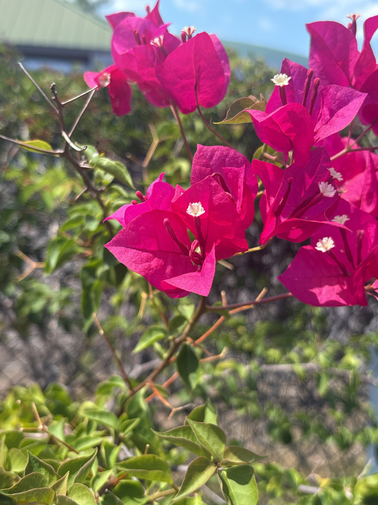

- The species name glabra means smooth or hairless in Latin — distinguishing it from the more common Bougainvillea spectabilis, which has hairy bracts and stems. In practice the two are so commonly hybridized and mislabeled in the nursery trade that species-level ID in the garden is often unreliable.
- The color display is the same: papery bracts in purple, magenta, pink, white, or orange surrounding tiny true flowers. The bracts are the color; the flowers inside are the biology.
- Spiny and vigorous — a mature bougainvillea in the right spot is nearly indestructible and can live for decades.
- In its native Brazil, a significant butterfly nectar plant. In Florida cultivation, similar value but with the caveat that some modern compact cultivars may be reduced nectar producers.
Non-native. Native to Brazil. Member of Nyctaginaceae — the four-o'clock family.
- Lesser Bougainvillea is the smoother, somewhat tamer of the park's two bougainvilleas.
- Its species name glabra means hairless: its stems and leaves are nearly smooth, where the Great Bougainvillea (Bougainvillea spectabilis, PSBP-00076) is distinctly hairy - the quickest way to tell them apart. It also tends to grow a little more shrub-like and to bloom heavily, which is why it is the parent of many common landscape cultivars.
- As with all bougainvilleas, the show is not in the flowers but in the bracts - papery, modified leaves, usually magenta to purple, surrounding the small true cream-white flowers at the center. And as with all of them, it blooms hardest under mild stress: full sun, lean soil, and infrequent water bring out the color, while rich soil and heavy water give leafy growth and thorns.
- It belongs to Nyctaginaceae, the four-o'clock family, alongside the park's Great Bougainvillea and Four-o'clock.
Bees and butterflies visit the small true flowers inside the bracts. The dense thorny growth provides well-protected nesting sites for small birds — few predators are willing to navigate the spines.
A useful structural plant for wildlife habitat even when not in peak bloom.
Tiny, cream-white, tubular, three per cluster, inside the colorful bracts.
Papery, long-lasting, in purple, magenta, pink, white, or orange. The visual display of the plant.
Recurved, along stems. Handle with gloves.
Vigorous climbing or sprawling vine. Can be trained as a shrub with pruning.
The papery bracts are the signature. Look for the tiny true flowers inside the bract cluster. Stems are armed with recurved spines.
The thorns are the main hazard, and the sap can cause dermatitis in sensitive people. It isn't a food plant.
The ASPCA doesn't list it as toxic to dogs or cats; eating a lot of bracts may cause mild stomach upset, vomiting, or diarrhea.


- © Aiden Gitt (CC-BY-NC), via iNaturalist
- © teschaim (CC-BY-NC), via iNaturalist